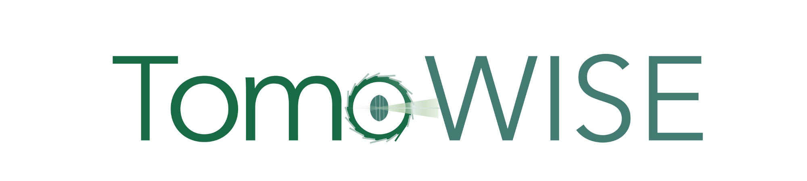

Point your camera at the TomoWISE Logo to bring the beamline to life.
Camera access is used for logo recognition only.
It stops once the logo is recognized.
For the best viewing experience, please turn your phone sideways.
Preparing the beamline…
Rotate your phone for a wider view. Playback continues.